| Xiaoqiang ZHU | ||
| Affiliations | ||
| School of Communication and Information Engineering | ||
| Shanghai University | ||
| Email: xqzhu@shu.edu.cn |
| Efficient dynamic deformation simulation by integrating PDE-based reconstruction and XPBD | ||
| Junheng Fang, Zhidong Xiao, Xiaoqiang Zhu, Lihua You, Jian Jun Zhang | ||
| CASA2023, AniNex Short Papers |
| 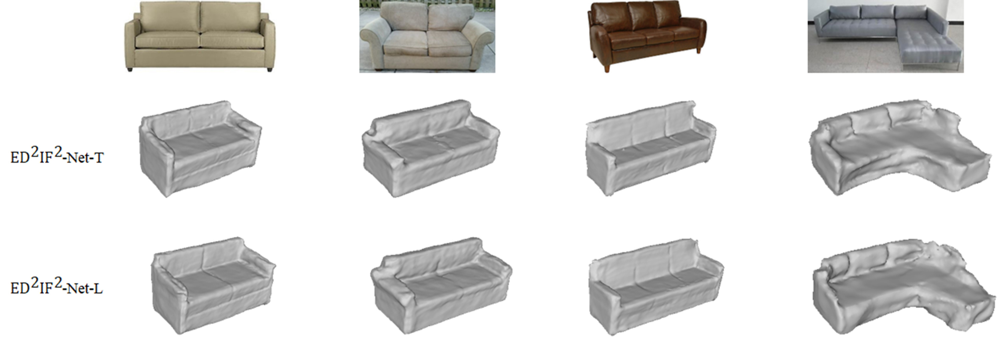 | ED2IF2-Net: Learning disentangled deformed implicit fields and enhanced displacement fields from single images using pyramid vision transformer | |
| Xiaoqiang Zhu, Xinsheng Yao, Junjie Zhang, Mengyao Zhu, Lihua You, Xiaosong Yang, Jianjun Zhang, He Zhao and Dan Zen | ||
| Appl. Sci. 2023, 13(13), 7577; DOI: 10.3390/app13137577(sci) |
| 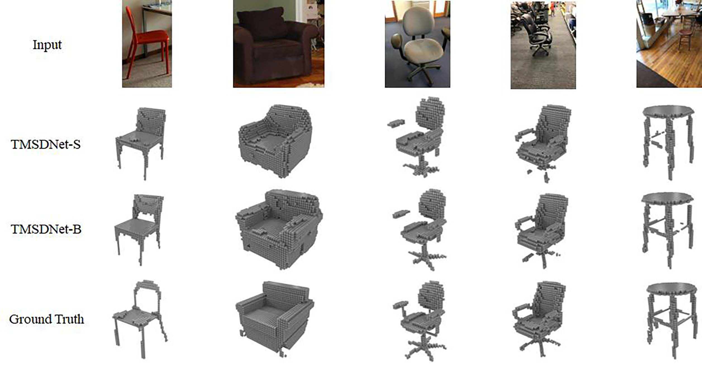 | TMSDNet: Transformer with multi-scale dense network for single and multi-view 3D reconstruction | |
| Xiaoqiang Zhu, Xinsheng Yao, Junjie Zhang, Mengyao Zhu, Lihua You, Xiaosong Yang, Jianjun Zhang, He Zhao, Dan Zeng | ||
| Computer Animation & Virtual Worlds, 03 August 2023 https://doi.org/10.1002/cav.2201(sci) |
| 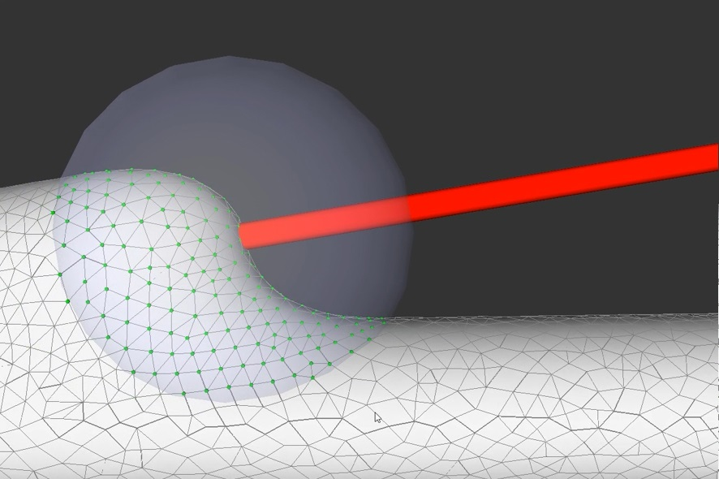 | Robust quasi-uniform surface meshing of neuronal morphology using line skeleton-based progressive convolution approximation | |
| Xiaoqiang Zhu, Xiaomei Liu, Sihu Liu, Yalan Shen, Lihua You, Yimin Wang | ||
| Front. Neuroinform., 27 October 2022 https://doi.org/10.3389/fninf.2022.953930.(sci) |
| Controllable Blending of Line and Polygon Skeleton-based Convolution Surfaces with Finite Support Kernels | ||
| Xiaoqiang Zhu, Qi Chen, Sihu Liu, Chenjie Fan, Chenze Song, Junjie Zhang, Dan Zeng, Xiaogang Jin | ||
| Computers & Graphics (Special Issue of SMI'2022), Elsevier, 2022, 105 (Accepted).(sci) |
| 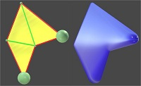 | Barycentric Convolution Surfaces Based on General Planar Polygon Skeletons | |
| Xiaoqiang Zhu, Chenze Song, Mengyao Zhu, Xiangyang Wang, Lihua You, Xiaogang Jin | ||
| Graphical Models (https://doi.org/10.1016/j.gmod.2020.101069)(sci) |
| 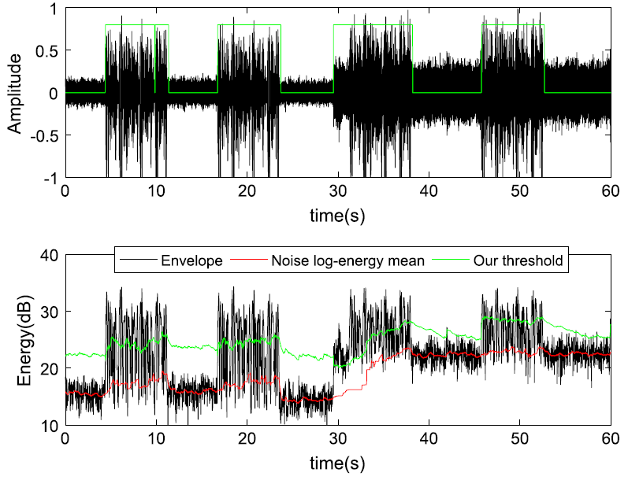 | Long-term speech information based threshold for voice activity detection in massive microphone network | |
| Mengyao Zhu, Xiukun Wu, Zhihua Lu, Tao Wang, Xiaoqiang Zhu* | ||
| Digital Signal Processing, Available online 31 May 2019,https://doi.org/10.1016/j.dsp.2019.05.012(sci) |
| 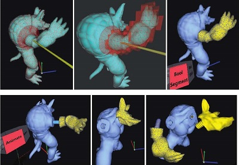 | Screwing Assembly Oriented Interactive Model Segmentation in HMD VR Environment | |
| Xiaoqiang Zhu, Lei Song, Nan Wang, Ruiheng Zhang, Shenshuai Chen, Xiangyang Wang, Mengyao Zhu, Lihua You, Zhigang Deng, Xiaogang Jin | ||
| CASA2019, Computer Animation and Virtual Worlds. 2019;e1880. https://doi.org/10.1002/cav.1880(sci) [Video] |
| 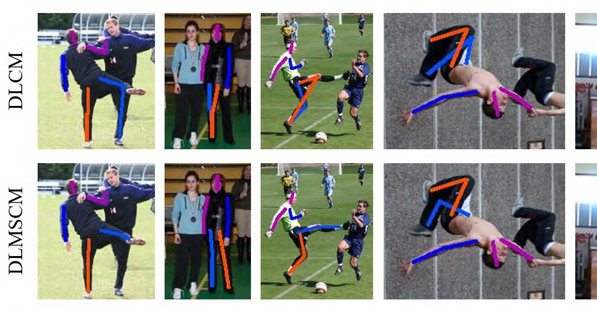 | Human Pose Estimation With Deeply Learned Multi-Scale Compositional Models | |
| Rui Wang, Zhongzheng Cao, Xiangyang Wang, Zhi Liu, Xiaoqiang Zhu | ||
| IEEE Access 7: 71158-71166 (2019) (SCI) |
| 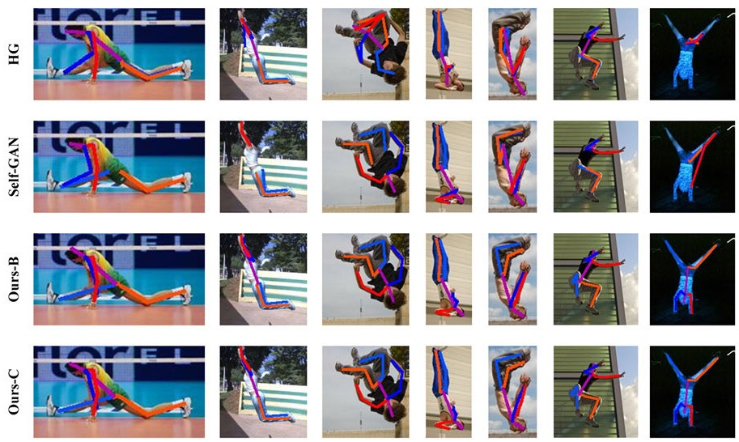 | Improving Human Pose Estimation With Self-Attention Generative Adversarial Networks | |
| Xiangyang Wang, Zhongzheng Cao, Rui Wang, Zhi Liu, Xiaoqiang Zhu | ||
| IEEE Access 7: 119668-119680 (2019) (SCI) |
| 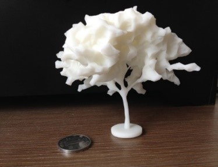 | Alpha-Shape based 3D Printable Manifold Modeling | |
| Xiaoqiang Zhu, Chenjie Fan, Lei Song, Chenze Song, Mengyao Zhu, Xiangyang Wang | ||
| ICGIP2018 (10th International Conference on Graphics and Image Processing),p96-p98,Chengdu,December 12.12-14(ei：20192106949200) |
| 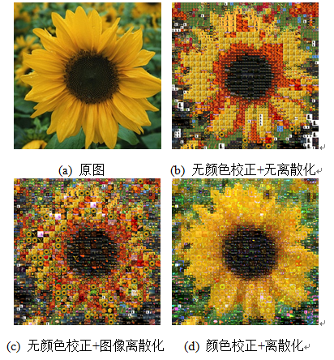 | Parallel Collage of Artistic Mosaic Images Based on Histogram Matching | |
| Lei Song,,Xiaoqiang Zhu,Hanchen Ye, Xuan Shi, Mengyao Zhu, Xiangyang Wang | ||
| Journal of Anhui University of Technology (Natural Science)，35(4):360-367(2018) (In Chinese, Recommended by NCIG2018) |
| 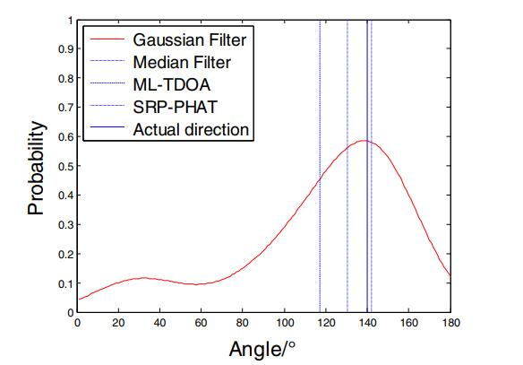 | Gaussian filter for TDOA based sound source localization in multimedia surveillance | |
| Mengyao Zhu, Huan Yao, Xiukun Wu, Zhihua Lu, Xiaoqiang Zhu, Qinghua Huang | ||
| Multimedia Tools Appl. 77(3): 3369-3385 (2018)（sci） |
| 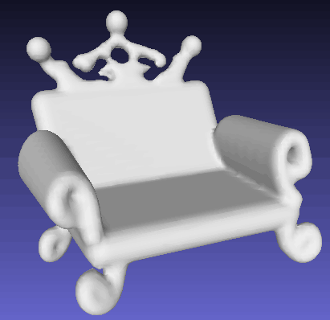 | Interactive Modelling on Smooth Weighted Distance Surface in HMD VR Environment | |
| Xiaoqiang Zhu, Hongyi Pan, Hao Xu, Lei Song, Mengyao Zhu, Xiangyang Wang. | ||
| Journal of System Simulation, 30(7):2459-2464(2018).(In Chinese, Recommended by ChinaVR 2017) [Video] |
| 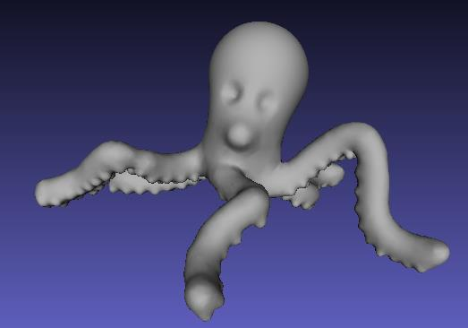 | Interactive sculpture modeling based on mesh deformation in HMD VR environment | |
| Xiaoqiang Zhu, Tao Yu | ||
| Journal of Zhejiang University (Engineering Science), 52(3): 599-604(2018)（EI）,（In Chinese, Recommended by China Graphics’2017） [Video] |
| 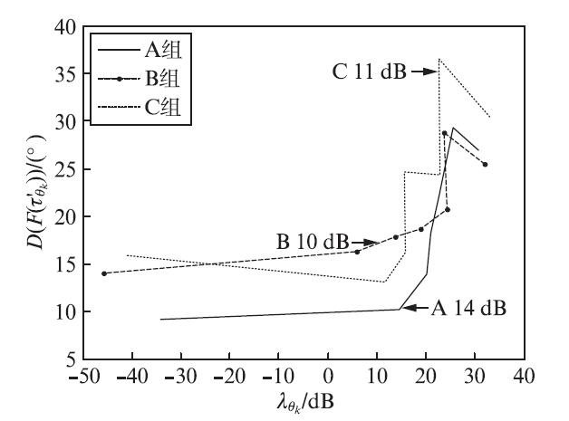 | Analysis on Microphone Array Consistency Based on Time Delay | |
| Huan Yao, Mengyao Zhu, Xiaoqiang Zhu | ||
| Journal of Fudan University (Natural Science), 56(2): 175-181 (2017) (EI) |
| 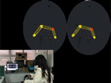 | Brush2Model: Convolution Surface-based Brushes for 3D Modeling in HMD-based Virtual Environments | |
| Xiaoqiang Zhu, Lei Song, Lihua You, Mengyao Zhu, Xiangyang Wang, Xiaogang Jin | ||
| CASA2017, Comp Anim Virtual Worlds. 2017;e1764. https://doi.org/10.1002/cav.1764 (sci) [Video] |
| 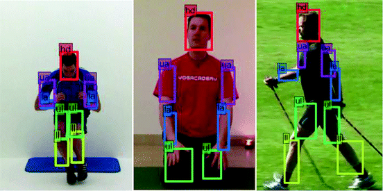 | Human Pose Estimation via Deep Part Detection | |
| Xiangyang Wang, Jiacheng Hu, Yusu Jin, Zhi Liu, Xiaoqiang Zhu, Qiuyu Zhu,Haiwu Zhao | ||
| International Forum on Digital TV and Wireless Multimedia Communications IFTC 2017: Digital TV and Wireless Multimedia Communication pp 55-66(ei) |
| 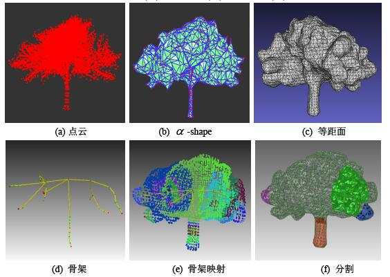 | Tree Crown LOD Modeling Based on α-Shape | |
| Xiaoqiang Zhu, Hao Zhou, Lei Song | ||
| Journal of Graphics, 38(3):303-313(2017)(In Chinese) |
| 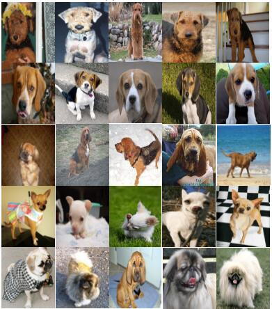 | Multi-scale Deep Residual Networks for Fine-Grained Image Classification | |
| Xiangyang Wang, Yusu Jin, Zhi Liu, Yadong Zhao,Xiaoqiang Zhu, Juan Zhang | ||
| In: Yang X., Zhai G. (eds) Digital TV and Wireless Multimedia Communication. IFTC 2016. Communications in Computer and Information Science, vol 685, pp205-217, Springer, Singapore(ei) |
| 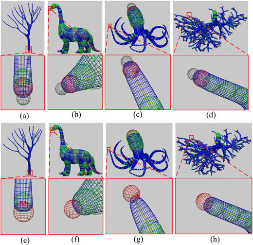 | Analytical solutions for tree-like structure modelling using subdivision surfaces | |
| Xiaoqiang Zhu, Xiaogang Jin, Lihua You | ||
| Computer Animation and Virtual Worlds 26(1): 29-42 (2015) (sci) [PDF][Video] |
| 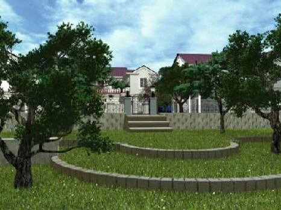 | High-quality tree structures modelling using local convolution surface approximation | |
| Xiaoqiang Zhu, Xiaogang Jin, Lihua You |
||
| The Visual Computer 31(1): 69-82 (2015) (sci) [PDF][Video] |
| 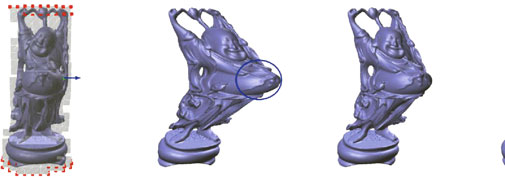 | A Method for Physics-based Dynamic Deformation with St. Venant Kirchhoff Elasticity and Implicit Newmark Integrator | |
| Xiang Feng, Wanggen Wan, Xiaoqiang Zhu, Yanlu Yin, Jing Wang |
||
| Journal of Information & Computational Science, 2015, 12(9), pp.3333-3343（ei） |
| 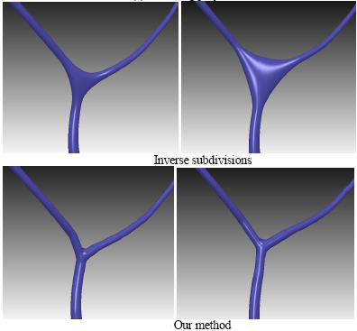 | A Two-Phase Approximation of Cylindrical Branching Models | |
| Xiaoqiang Zhu, Junli Chen, Juan Zhang |
||
| IEEE ICALIP 2014: The 4th Conference on Audio, Language and Image Processing: 826-829 (2014) (ei) |
| 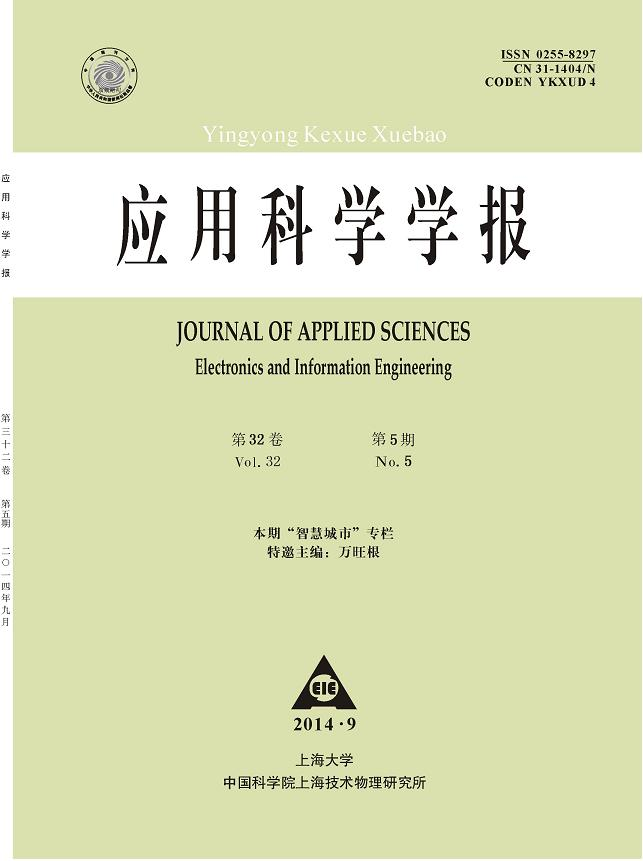 | Progress in Procedural Modeling | |
| Xiaoqiang Zhu, Wanggen Wan |
||
| Journal of Applied Science (Electronics and Information Engineering), 32(5): 469-472 (2014) |
| 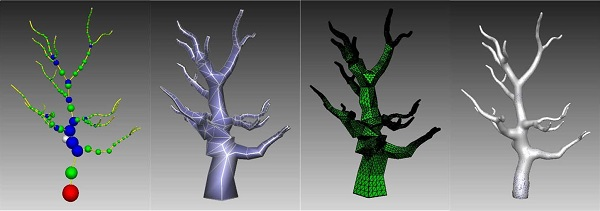 | Efficient polygonization of tree trunks modeled by convolution surfaces | |
| Xiaoqiang Zhu, Xuekun Guo, Xiaogang Jin | ||
| SCIENCE CHINA Information Sciences 56(3): 1-12 (2013) (sci) [PDF][Video] |
| 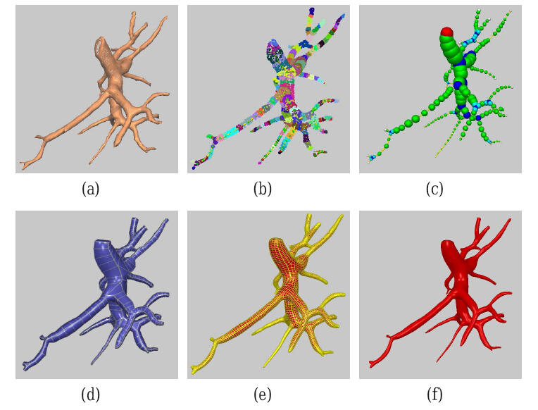 | Efficient tree-like structures modeling based on subdivision surfaces | |
| Xiaoqiang Zhu, Xiaogang Jin, Lihua You |
||
| ACM VRCAI 2013: The 12th ACM International Conference on Virtual Reality Continuum and its Applications in Industry: 199-206 (2013) (ei) |
| 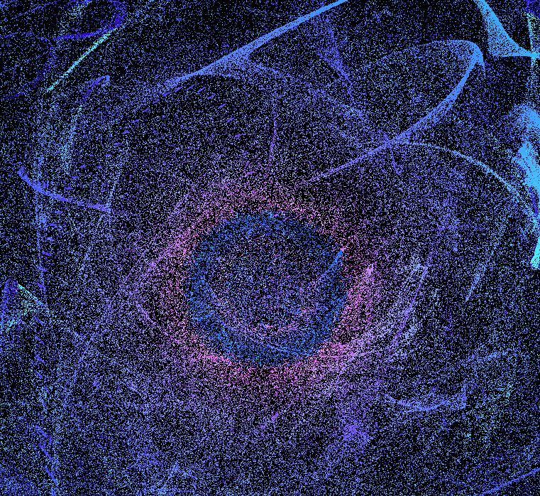 | Parallel Simulation of Large-Scale Universal Particle Systems Using CUDA | |
| Xiangfei Li, Xuzhi Wang, Wanggen Wan, Xiaoqiang Zhu, Xiaoqing Yu |
||
| IEEE DASC 2013: The 11th IEEE International Conference on Dependable, Autonomic and Secure Computing: 572-577 (2013) (ei) |
| 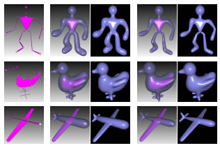 | Analytical solutions for sketch-based convolution surface modeling on the GPU | |
| Xiaoqiang Zhu, Xiaogang Jin, Shengjun Liu, Hanli Zhao |
||
| The Visual Computer 28(11): 1115-1125 (2012) (sci) [PDF][Video1][Video2] |
| 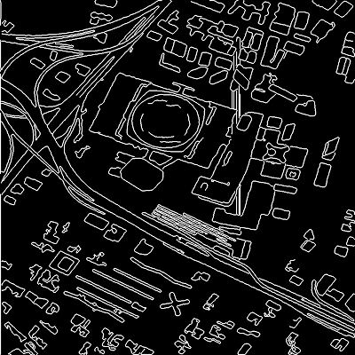 | The Improved Extraction of Urban Roads Based on Dynamic Programming | |
| Xiaoping Liu, Xiaoqiang Zhu, Ye Yu, Xiaohui Yuan， Bill P. Buckles |
||
| Journal of Engineering Graphics, 31(4): 183-188 (2010) |
| 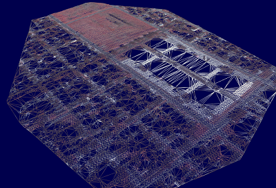 | The Extraction of Urban Ground Surface Based on LiDAR Point-Cloud | |
| Xiaoqiang Zhu, Lin Li, Ye Yu, Xiaoping Liu |
||
| CACIS·2009: 655-658 (2009) |
| 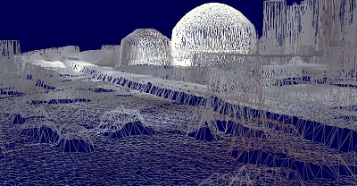 | Building Algorithm of Triangulation Based on LiDAR Point Clouds | |
| Xiaoping Liu, Xiaoqiang Zhu, Ye Yu, Xiaohui Yuan， Bill P. Buckles |
||
| Journal of Software(Supplement), Vol(19): 1-9 (2008) (ei) |
| 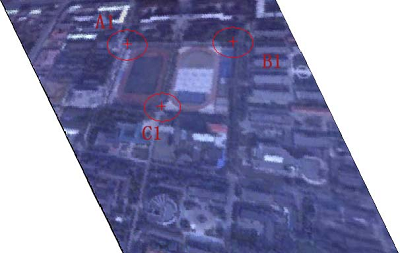 | Three-points-based aerial image slant correction method and its application | |
| Yuetong Luo, Xiaoqiang Zhu, Xiaoping Liu |
||
| Chinese Journal of Scientific Instrument(Supplement), 28(8): 590-593 (2007) |